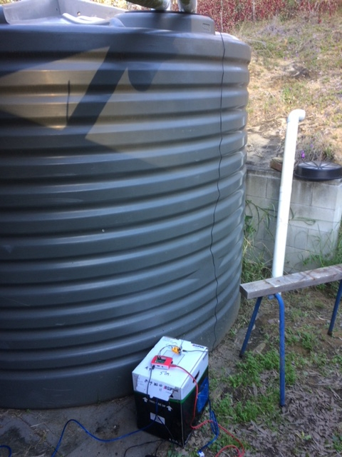

The project that I have come up with is a wireless water tank level meter. This meter will be able to determine the level of any type of rainwater tank, so the homeowners know how much rain water they have in their tank. This will also include a basic and easy to understand GUI that allows anyone to be able to use this product and to understand what the different levels mean. It will also include some form of notification when the levels of the tank get low, which can be done through either an app notification, email or other types of software
The motivation for this project is because I have personally experienced not being able to check the level of the water tank at my home to know how much water we had and to correlate that to water bills to understand how much water we were using etc. I believe it is an interesting and innovative tool as more and more newer houses that are being built are having water tanks built into their home to help save water. This also helps people who retrofit water tanks to be able to save water and to show how much they actually save.
The water tank level meter will include the monitoring software as well as the actual hardware that is required to display the level meters. The hardware will include devices such as a Raspberry Pi and ultrasound waterproof sensors that allow the user to determine the water level. The waterproofing of the sensors allowed for the device to be placed into the tank without having to worry about any tubing or other waterproofing system to protect the device or having that device fail and breaking it. The device will also need power, and this can be quite difficult when dealing with water. The best way to complete this is by using some form of waterproofing to allow the power cord not to be damaged or to run the power lead under some form of roof, gutter or eaves to allow the lead to be protected in all weather conditions in combination with a weatherproof box. The level sensor can be done in two ways WIFI or wired using ethernet/data connection. The best way to figure out which method to use is to judge the distance that you would need to run the cable. This depends on how far away your closest access to your network is, whether that be a switch, data port or router. If any of those are too far away from your site than wireless is the best way to utilise this device to its full potential. Although there are sometimes issues regarding the reliability of a wireless connection, WIFI is the best way to go in terms of convenience especially because there isn’t a whole heap of data being sent and received at any one time. The code for the Raspberry Pi is written in Python and there are many different ways you can code the device. The best way to code so you are able to get the most accurate data is by using the mean of a few readings and using that reading to display on the GUI. The GUI will display the water level percentage of the tank and will send email notifications when it is full and when it is empty which again can be done by using a simple code. Mounting all the parts needed for the sensor can be placed inside a waterproof container that protects the sensitive parts of the device such as power cords, data cords and other computer necessities. As we are using a WIFI connection, the only power needed will be the Raspberry Pi which powers the entire system, so running and hiding cable won’t be too difficult as there is only one cable coming into and leaving the mounting box. Managing this software will be done through a Virtual Network Computing (VNC) method which can connect straight to the Raspberry Pi and display the correct levels and the tank percentage as well as a diagram that is done through writing a little bit of code. The overall design and the way in which is mounted is completely up to the user but it is best to have all cables hidden and to have the container with all the components in an easy to access spot incase things do not work or the Raspberry Pi turns off, which can be easily turned back on with the push of a button
The hardware tools required include: a hot glue gun, soldering iron, drill, safety equipment, ladder (optional if the tank is too high to reach). The equipment includes: housing, Raspberry Pi Zero W, 2x Ultrasonic Waterproof Sensors, perma-proto board, resistors, jumper wires, on/off button, barrel to micro USB connector and solder. Code can easily be accessed from GitHub or any other open source websites. VNC Viewer can be downloaded from any website but needs to be compatible with the Raspberry Pi. The sensors are another key piece of equipment as they need to be waterproof to allow them to function properly and to give the correct reading
Certain basic skills are needed for the hardware side of this project, like being able to solder and use a hot glue gun safely and with precision as to not ruin the cable or other components of the device. More intermediate skills are needed when coding the Raspberry Pi as there might be certain aspects that need to be changed such as tank size or how you want the data to be displayed although most of the code is copy and paste and can be found on many open source websites such as Github. Another piece of coding will be required to code in email notifications to let the user know when the tank is full and empty
If the project is successful, the user will be able to use this on a day to day basis allowing them to know the water levels of the water tank and when to switch them over once one is empty. The original problem of not knowing when the water tank is full or empty is now solved because of this device, which helps the user to see their tank water levels. By using this device, the user will gain a full understanding of their water tank thanks to the data that this device collects. This can be used in many ways, such as comparing water bills, checking if the tanks have a leak or is using too much water or if the user just wants to know how much water there is in the tank